【mybatis】mybatis从入门到入土
1 环境准备
1.1 下载源码导入IDEA
先下载这三个项目：我是fork到自己仓库了，也可以从mybatis官方仓库下载：https://github.com/mybatis
mybatis-3：mybatis源码项目
spring：mybatis与spring集成使用的，方便mybatis集成spring
parent：mybatis源码所依赖的基础依赖
将这三个项目导入到IDEA，导入方式不是直接打开文件夹，而是新建空项目，然后添加module（可以参考《Mybatis3源码深度解析 1.4节》）：
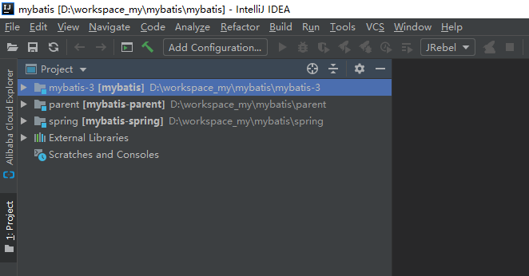项目接口如下：
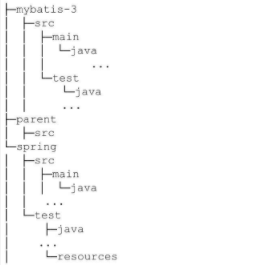1.2 HSQLDB数据库简介
- 是什么
- 是纯java语言写的关系型数据库管理系统
- 怎么用
- 运行方式有两种：单独server部署（独立部署）或者内存模式运行（嵌入到应用中）；
- 数据保存有两种方式：内存或者磁盘；
- 为什么要用
- 因为Mybatis源码使用了HSQLDB作为单元测试使用的数据库，所以为了学习源码，需要了解。
- 使用示例
- 1、准备好sql文件；
- 2、在项目中引入hsqldb的依赖
- 3、在代码中就可以直接使用
2 JDBC知识准备
2.1 JDBC是什么？
- java语言提供的访问关系型数据的接口，或者说是规范；
2.2 JDBC怎么用?
- 一般来说分为四个步骤
- 1、与数据源建立连接；
- 2、执行SQL语句；
- 3、检索SQL执行结果；
- 4、关闭连接
* 与数据源建立连接
- 简单的来说，就是说去Connection对象：JDBC提供了Connection接口，用来表示与底层数据源的连接；
- 获取Connection对象的方式一：DriverManager
Connection connection = DriverManager.getConnection("jdbc:hsqldb:mem:mybatis","sa", "")- 获取Connection对象的方式二：DataSource
// 创建DataSource实例
DataSource dataSource = new UnpooledDataSource("org.hsqldb.jdbcDriver","jdbc:hsqldb:mem:mybatis","sa", "");
// 获取Connection对象
Connection connection = dataSource.getConnection();* 执行SQL语句
JDBC获取到Connection对象后，可以设置事务或者创建Statement，PreparedStatement，CllableStatement对象；
Statement对象可以理解为SQL语句的执行器，比如调用Statement中的executeQuery方法执行查询，executeUpdate方法执行更新；
Statement执行之后，可以通过Statement接口提供的getResultSet获取查询结果集，或者通过getUpdateCount获取更新影响的行数；
* 检索SQL执行结果
- 执行SQL之后会有结果集，比如Statement使用getResultSet得到结果集，我们使用ResultSet这个接口来接收这些返回值；
- 获取到返回值之后，使用ResultSet提供的各种get方法可以拿到结果；
* 关闭连接
- 关闭连接
2.3 JDBC核心类解读
Connection
- 是什么？一个Connection对象表示通过JDBC驱动与数据源建立的连接，这里的数据源可以是关系型数据库，文件系统或者是其他通过JDBC访问的数据。
- 特性：使用JDBC API的应用程序，可能需要维护多个Connection对象，一个Connection对象可能访问多个数据源，也可能访问单个数据源。？？？？没看懂
- 获取Connection的方式有两种：一种是通过DriverManager，一种是通过DateSource（主流都是用这个，推荐）；
- 具体相关：包括JDBC驱动类型，DriverManager类，Driver接口，DataSource接口等；
- JDBC驱动类型
- JDBC驱动类型不是我们所说mysql-connection-java，而是更为底层的驱动类型方式，常见的mysql-connection-java这个jar包只是其中一个驱动类型的具体实现；
- JDBC-ODBC Bridge Driver ：应用程序->JDBC API->JDBC驱动->ODBC驱动<-通信协议->数据库（桥接影响性能，不推荐）
- Native API Driver：应用程序->JDBC API->JDBC驱动->特定客户端/特定链接库<-通信协议->特定数据库（特定数据库使用特定链接库，不能跨平台）
- JDBC-Net Driver：应用程序->JDBC API->JDBC驱动<-通信协议->服务器<-通信协议->数据库（中间使用了服务器转发，影响性能），微软有一款产品再用。
- Native Protocol Driver：应用程序->JDBC API->JDBC驱动-><-通信协议->数据库（直接使用java开发JDBC某一个数据库的驱动，直接使用该驱动访问数据库，少了转换，性能好，推荐）比如常见的mysql-connection-java.jar 以及oracle的等等，都是使用这个方式。
- Driver接口
- 所有的驱动都需要实现Driver接口，并且实现一个静态代码块。
public class AcmeJdbcDriver implements java.sql.Driver {
static {
java.sql.DriverManager.registerDriver(new AcmeJdbcDriver());
}
...
}- 静态代码块的作用是：在类加载的时候，注册当前驱动的实例；
- 因为类加载的时候就会注册驱动，所以我们使用JDBC操作数据库之前都要先加载驱动
TextClass.forName("org.hsqldb.jdbcDriver");
- 加载驱动类目前有两种方式，一种是Class.forName() 一种是通过SPI机制；
- DriverAction接口
- 可以解除注册，从DriverManager中移除已经注册的驱动，知道就行了。一般是驱动开发人员需要关注；
- DriverManager类
- Driver接口是驱动，有一些实现类，这些实现类在实例化的时候，会将自己注册到DriverManager中；
- DriverManager有两个重要的方式：registerDriver() 用来注册驱动实例的。一个是getConnection()用来获取数据库Connection对象的。
- DriverManager的getConnection，会根据传进来的URL，解析，然后通过URL拿到具体的驱动实现类，最后通过具体的驱动实现类链接到对应的数据库。
- 小结：三者之间的关系
//Driver调用DriverManager注册
public class XXXDriver implements Driver{
static void registerMe() {
DriverManager.registerDriver(new XXXDriver);
}
Connection connect(String url, java.util.Properties info) throws SQLException{
//具体实现
}
}
//应用程序调用DriverManager获取Connection连接
public MainTest{
public static void main(String[] args){
Connection connection = DriverManager.getConnection(...);
}
}
//DriverManager调用Driver获取Connection连接
public class Drivermanager{
//DriverManager的源码
public static Connection getConnection(...) throws SQLException {
//最终调用的是Driver接口中的connect方法
return driver.connect();
}
}- DataSource接口
- 和DriverManager对比
| DriverManager | DataSource | |
|---|---|---|
| 需要在代码中硬编码指定驱动；Class.forName(….)，如果需要修改的时候，需要修改业务代码 | 使用配置的方式，同时使用JNDI暴露服务，通过逻辑名称可以简单的获取到DataSource对象，从而获得Connection； 另外当修改数据源的时候，只需要修改配置，不需要对应用代码进行修改。提高了应用程序的可移植性 | |
| 每获取一次Connection对象，都需要与数据库建立一次连接，使用完之后，需要关闭连接。 | DataSource接口支持数据库连接池和分布式事务。连接池通过对连接的复用而不是新建一个物理连接来显著地提高程序的效率。从而适用于任务繁忙、负担繁重的企业级分布式事务。 | |
| 参考文献：http://www.voidcn.com/article/p-vwtcyipy-rn.html | 参考文献：http://www.voidcn.com/article/p-vwtcyipy-rn.html |
- 大部分开源框架使用的都是DataSource接口；
- 关闭Connection对象
- 使用完之后需要显示的关闭；
- close() 用于关闭connection对象
- isClosed() 判断连接是否关闭
- isValid() 判断连接是否有效
Statement
Statement是一个接口，有两个比较重要的子接口：PreparedStatement和CallableStatement。
Statement接口定义了执行SQL语句的方法，不支持参数输入；
PreparedStatement接口中增加了设置SQL参数的方法；设值字后，再次设值需要注意，可能需要clear之后才行。
CallableStatement接口继承自PreparedStatement，增加了调用存储过程以及检索存储过程调用结果的方法。
- 问题一：Statement接口中boolean execute(String sql, String columnNames[]) throws SQLException;这个方法的第二个入参的含义是什么？？
表示可以被用于检索！！去你妈的。。这是人能听懂的话吗？一步一步的往下看：
首先要知道，在Statement中，以execute(..)方法为例，总共有四个方法，其中有三个方法，提到了可以被用于检索：【注意：只有当sql是INSERT的时候，第二个字段才会生效，如果是UPDATE后者是DELETE语句，第二个参数填了也没用】

对于这三个方法，我们来看看第二个字段分别是什么含义？（摘录自java8api）
TextautoGeneratedKeys - 一个常数，表示使用方法getGeneratedKeys是否应使自动生成的密钥可用于getGeneratedKeys; 以下常数之一： Statement.RETURN_GENERATED_KEYS或Statement.NO_GENERATED_KEYS
TextcolumnIndexes - 插入行中的列的索引数组，应该可用于通过调用方法进行 getGeneratedKeys
TextcolumnNames - 插入行中列的名称数组，应该可用于通过调用方法进行 getGeneratedKeys
瞅瞅，这说的是人话吗！！那么接下来用人话说就是：当我们希望拿到INSERT语句的返回结果（返回结果可以是主键，可以是表中某一个字段）的时候，就指定第二个参数，这样获取到resultSet的时候，就可以拿到我们期望的返回结果。这就叫做可用于检索！还是不懂，看个例子就懂了。
例子1：不指定检索字段，是什么样子的
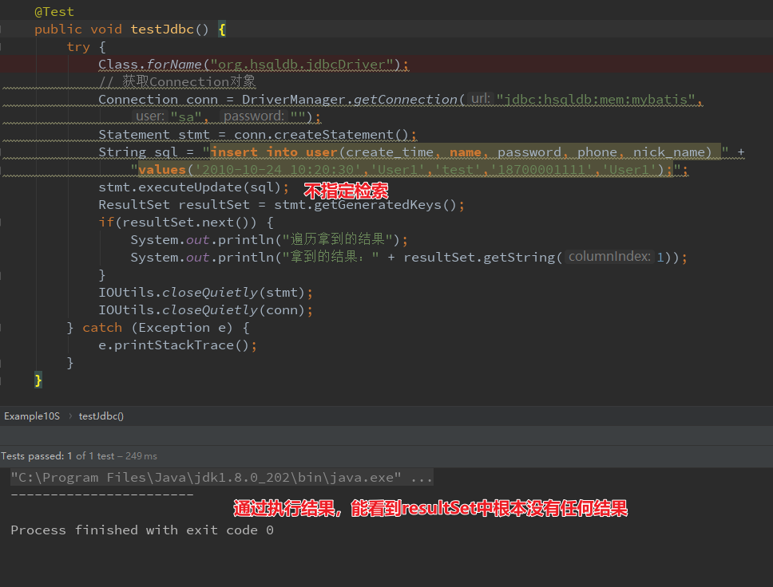例子2：指定autoGeneratedKeys检索
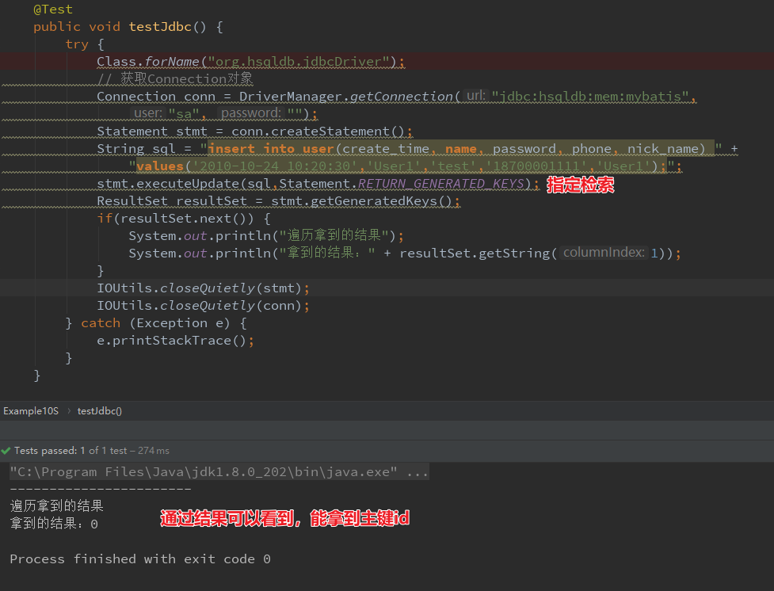例子3：
- 不贴代码了
- 当我们指定检索为：
Textstmt.executeUpdate(sql,Statement.NO_GENERATED_KEYS);
的时候，和没指定检索是一样的效果；
例子4：
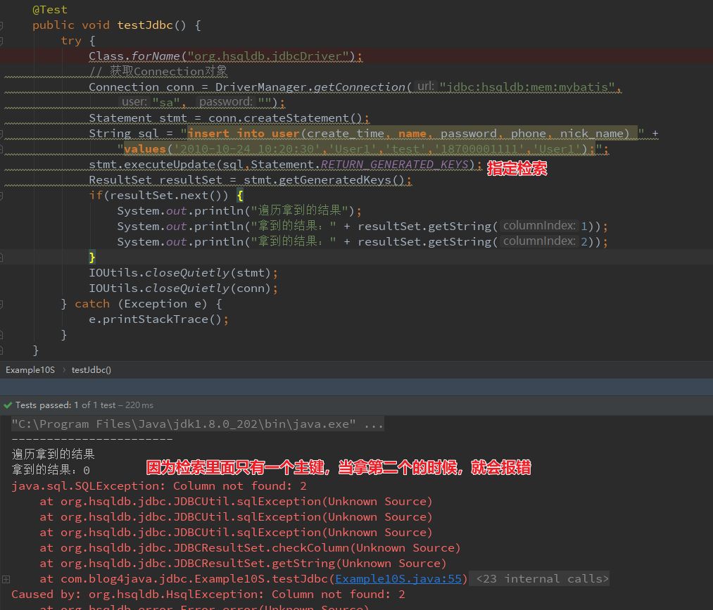总结：到这里，可能有点眉目了，但是还是不知道检索是什么？我们再来接着看指定columnIndexes和columnNames的时候，是什么样子的。
例子5：
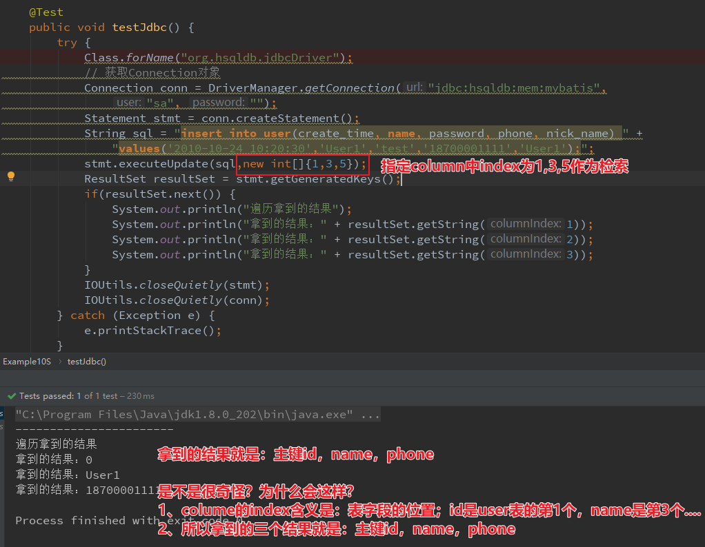例子6：
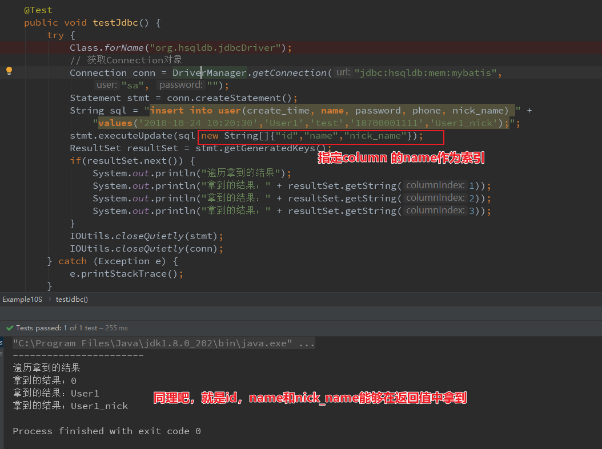例子7：
- 使用columnIndexes和columnNames的时候，如果超了（指定了3个索引，但是get4个），还是会报错的；
- 当指定是columnNames的时候，除了可以通过getXXX(数字)的形式，也可以通过getXXX(“name”)的形式；
总结：当我们希望拿到INSERT语句的返回结果（返回结果可以是主键，可以是表中某一个字段）的时候，就指定第二个参数，这样获取到resultSet的时候，就可以拿到我们期望的返回结果。这就叫做可用于检索
- 问题二：CallableStatement到底是干嘛的？什么是存储过程？什么是IN，什么是OUT，什么是INOUT？
想解答这个问题，需要知道什么是存储过程，都没有学习，也不知道是个啥。
ResultSet
ResultSet简单的说，就是SQL执行的结果，掌握下面三点：
ResultSet的类型：游标是否是可以滚动和修改是否对数据库敏感
ResultSet的并行性：resultSet是否可以读写
ResultSet的可保持性：事务结束后是否要关闭resultSet
- ResultSet的类型：
- TYPE_FORWARD_ONLY（默认）：游标只能向前
- TYPE_SCROLL_INSENSITIVE：游标可向前向后，也可指定；ResultSet数据的修改对数据库不敏感（不敏感的意思就是ResultSet的修改不会影响到数据库中的记录）；
- TYPE_SCROLL_SENSITIVE：游标可向前向后，也可指定；ResultSet数据库的修改对数据库敏感；
- 这三个类型，在创建Statement的时候，可以指定
- ResultSet的并行性
- CONCUR_READ_ONLY：为resultSet设置这种属性后，只能从ResultSet中读取数据；修改会报错；
- CONCUR_UPDATABLE：为resultSet设置这种属性后，可读可写；
- 这两个属性，也是在创建Statement的时候，可以指定的（同ResultSet的类型一样，都是可以指定的）
- ResultSet的可保持性
- HOLD_CURSOURS_OVER_COMMIT：调用connection的commit方法后，不关闭当前事务创建的resultSet。
- CLOSE_CURSOURS_AT_COMMIT：会关闭；好处就是会提高系统的性能。
- 默认的可保持性，取决于驱动的具体实现。
- 修改ResultSet对象
- 并行性为CONCUR_UPDATABLE的ResultSet可以使用ResultSet接口中提供的方法对其进行更新，包括更新行，删除行，在驱动的支持下，还可以插入行；
- 关闭ResultSet对象
DataBaseMetaData
- 简单的说，就是用来提供底层数据源的相关的信息；比如获取数据源的信息，获取数据源是否支持某一特性，获取数据源的限制等等；
- 创建DataBaseMetaData对象：通过connection对象创建的。
- 获取数据源的基本信息
Text@Test public void testDbMetaData() { try { Class.forName("org.hsqldb.jdbcDriver"); // 获取Connection对象 Connection conn = DriverManager.getConnection("jdbc:hsqldb:mem:mybatis", "sa", ""); DatabaseMetaData dmd = conn.getMetaData(); System.out.println("数据库URL:" + dmd.getURL()); System.out.println("数据库用户名:" + dmd.getUserName()); System.out.println("数据库产品名:" + dmd.getDatabaseProductName()); System.out.println("数据库产品版本:" + dmd.getDatabaseProductVersion()); System.out.println("驱动主版本:" + dmd.getDriverMajorVersion()); System.out.println("驱动副版本:" + dmd.getDriverMinorVersion()); System.out.println("数据库供应商用于schema的首选术语:" + dmd.getSchemaTerm()); System.out.println("数据库供应商用于catalog的首选术语:" + dmd.getCatalogTerm()); System.out.println("数据库供应商用于procedure的首选术语:" + dmd.getProcedureTerm()); System.out.println("null值是否高排序:" + dmd.nullsAreSortedHigh()); System.out.println("null值是否低排序:" + dmd.nullsAreSortedLow()); System.out.println("数据库是否将表存储在本地文件中:" + dmd.usesLocalFiles()); System.out.println("数据库是否为每个表使用一个文件:" + dmd.usesLocalFilePerTable()); System.out.println("数据库SQL关键字:" + dmd.getSQLKeywords()); IOUtils.closeQuietly(conn); } catch (Exception e) { e.printStackTrace(); } }
2.4 JDBC事务
- 事务边界：事务的开启是JDBC驱动或者数据库决定的，不能再代码中显示的开启；有些框架可能支持显示开始事务，至少JDBC不支持；什么时候开启事务，是SQL:2003规范决定的。
- 事务提交：关闭一个事务有两种方式，一种是自动提交（默认开启）：SQL在执行完之后，自动提交事务；还有一种是手动提交事务，需要关闭自动提交，然后在提交事务的时候，调用commit()方法；或者使用rollback()回滚事务；
- 事务隔离级别：事务隔离级别用于指定事务中对数据的操作对其他事务的可见性；
- 事务中出现的问题
- 脏读：B事务读取A事务中没有commit的数据，如果A回滚，此时B事务的数据就是错误的；
- 不可重复读：A事务操作时间很长，开始的时候读一条记录，B事务修改了这条记录，A事务再次读取这条记录将得到不同的结果；
- 幻读：A事务读取一些符合条件的数据，B事务插入了符合条件的若干数据，A通过相同的条件将会读取到B事务插入的数据；
- 事务的隔离级别
- TRANSACTION_NONE：驱动不支持事务
- TRANSACTION_READ_UNCOMMITED：允许其他事务读取当前事务未提交的数据，可能出现脏读，不可重复读，幻读；
- TRANSACTION_READ_COMMITED：当前事务未提交对其他事务是不可见的。可以解决脏读，会出现不可重复读，幻读
- TRANSACTION_REPEATABLE_READ：保证在一次事务中，相同查询得到结果是一致的，可以解决脏读和不可重复读，不能解决幻读；
- TRANSACTION_SERIALIZABLE：串行事务；可以解决上面三个问题，但是并发效率极低；
- 默认的事务隔离级别是由数据库驱动实现的。也可以通过connecton.setTransactionSolation()设置；
- 事务的保存点
- 保存点通过在事务中标记一个中间的点，一旦标记，事务可以回滚到标记点，而不影响保存点之前的操作；
- 驱动是否支持保存点，可以通过DataBaseMetaData中的supportSavePoints()来指定；
- 设置保存点：connection.setSavePoint()
- 回滚到保存点：setSavePoint会返回一个SavePoint对象，rollback的时候可以把这个对象传进去；
“磨刀不误砍柴工”这句话说得好，掌握了JDBC，在学习框架源码，往上靠就行了
3 Mybatis常用工具类
介绍mybatis中一些比较实用的工具类，例如：SQL，ScriptRunner，SqlRunner和MetaObject等；
3.1 SQL类
用于在Java代码中动态构建SQL语句；
@Test
public void testSelectSQL() {
String orgSql = "SELECT P.ID, P.USERNAME, P.PASSWORD, P.FULL_NAME, P.LAST_NAME, P.CREATED_ON, P.UPDATED_ON\n" +
"FROM PERSON P, ACCOUNT A\n" +
"INNER JOIN DEPARTMENT D on D.ID = P.DEPARTMENT_ID\n" +
"INNER JOIN COMPANY C on D.COMPANY_ID = C.ID\n" +
"WHERE (P.ID = A.ID AND P.FIRST_NAME like ?) \n" +
"OR (P.LAST_NAME like ?)\n" +
"GROUP BY P.ID\n" +
"HAVING (P.LAST_NAME like ?) \n" +
"OR (P.FIRST_NAME like ?)\n" +
"ORDER BY P.ID, P.FULL_NAME";
String newSql = new SQL() {{
SELECT("P.ID, P.USERNAME, P.PASSWORD, P.FULL_NAME");
SELECT("P.LAST_NAME, P.CREATED_ON, P.UPDATED_ON");
FROM("PERSON P");
FROM("ACCOUNT A");
INNER_JOIN("DEPARTMENT D on D.ID = P.DEPARTMENT_ID");
INNER_JOIN("COMPANY C on D.COMPANY_ID = C.ID");
WHERE("P.ID = A.ID");
WHERE("P.FIRST_NAME like ?");
OR();
WHERE("P.LAST_NAME like ?");
GROUP_BY("P.ID");
HAVING("P.LAST_NAME like ?");
OR();
HAVING("P.FIRST_NAME like ?");
ORDER_BY("P.ID");
ORDER_BY("P.FULL_NAME");
}}.toString();
assertEquals(orgSql, newSql);
}3.2 SqlRunner和ScriptRunner
在Mybatis源码测试用例中出现的频率比较高；用于执行SQL语句和SQL脚本；
@Test
public void testSelectOne() throws SQLException {
SqlRunner sqlRunner = new SqlRunner(connection);
String qryUserSql = new SQL() {{
SELECT("*");
FROM("user");
WHERE("id = ?");
}}.toString();
Map<String, Object> resultMap = sqlRunner.selectOne(qryUserSql, Integer.valueOf(1));
System.out.println(JSON.toJSONString(resultMap));
}@Test
public void testScriptRunner() {
try {
Connection connection = DriverManager.getConnection("jdbc:hsqldb:mem:mybatis",
"sa", "");
ScriptRunner scriptRunner = new ScriptRunner(connection);
scriptRunner.runScript(Resources.getResourceAsReader("create-table.sql"));
} catch (Exception e) {
e.printStackTrace();
}
}3.3 MetaObject和MetaClass
是Mybatis中的反射工具类，分别封装了对对象和类的反射访问；
@Test
public void testMetaObject() {
List<Order> orders = new ArrayList() {
{
add(new Order("order20171024010246", "《Mybatis源码深度解析》图书"));
add(new Order("order20171024010248", "《AngularJS入门与进阶》图书"));
}
};
User user = new User(orders, "江荣波", 3);
MetaObject metaObject = SystemMetaObject.forObject(user);
// 获取第一笔订单的商品名称
System.out.println(metaObject.getValue("orders[0].goodsName"));
// 获取第二笔订单的商品名称
System.out.println(metaObject.getValue("orders[1].goodsName"));
// 为属性设置值
metaObject.setValue("orders[1].orderNo","order20181113010139");
// 判断User对象是否有orderNo属性
System.out.println("是否有orderNo属性且orderNo属性有对应的Getter方法：" + metaObject.hasGetter("orderNo"));
// 判断User对象是否有name属性
System.out.println("是否有name属性且name属性有对应的Getter方法：" + metaObject.hasGetter("name"));
}@Test
public void testMetaClass() {
MetaClass metaClass = MetaClass.forClass(Order.class, new DefaultReflectorFactory());
// 获取所有有Getter方法的属性名
String[] getterNames = metaClass.getGetterNames();
System.out.println(JSON.toJSONString(getterNames));
// 是否有默认构造方法
System.out.println("是否有默认构造方法：" + metaClass.hasDefaultConstructor());
// 某属性是否有对应的Getter/Setter方法
System.out.println("orderNo属性是否有对应的Getter方法：" + metaClass.hasGetter("orderNo"));
System.out.println("orderNo属性是否有对应的Setter方法：" + metaClass.hasSetter("orderNo"));
System.out.println("orderNo属性类型：" + metaClass.getGetterType("orderNo"));
// 获取属性Getter方法
Invoker invoker = metaClass.getGetInvoker("orderNo");
try {
// 通过Invoker对象调用Getter方法获取属性值
Object orderNo = invoker.invoke(new Order("order20171024010248","《Mybatis源码深度解析》图书"), null);
System.out.println(orderNo);
} catch (IllegalAccessException e) {
e.printStackTrace();
} catch (InvocationTargetException e) {
e.printStackTrace();
}
}3.4 ObjectFactory和ProxyFactory
是对象创建的工具类，前者用于创建Mapper映射实体对象，后者用于创建Mapper映射实体对象对应的代理对象，通过动态代理实现Mybatis中懒加载机制。
@Test
public void testObjectFactory() {
ObjectFactory objectFactory = new DefaultObjectFactory();
List<Integer> list = objectFactory.create(List.class);
Map<String,String> map = objectFactory.create(Map.class);
list.addAll(Arrays.asList(1, 2, 3));
map.put("test", "test");
System.out.println(list);
System.out.println(map);
}@Test
public void testProxyFactory() {
// 创建ProxyFactory对象
ProxyFactory proxyFactory = new JavassistProxyFactory();
Order order = new Order("gn20170123","《Mybatis源码深度解析》图书");
ObjectFactory objectFactory = new DefaultObjectFactory();
// 调用ProxyFactory对象的createProxy（）方法创建代理对象
Object proxyOrder = proxyFactory.createProxy(order
,mock(ResultLoaderMap.class)
,mock(Configuration.class)
,objectFactory
,Arrays.asList(String.class,String.class)
,Arrays.asList(order.getOrderNo(),order.getGoodsName())
);
System.out.println(proxyOrder.getClass());
System.out.println(((Order)proxyOrder).getGoodsName());
}4 Mybatis核心组件介绍
4.1 使用Mybatis操作数据库
- 编写mybatis的主配置文件：mybatis-config.xml
- 新增Java实体与数据库记录建立映射
- 定义用于执行SQL的Mapper
- 通过Mybatis提供的API执行我们定义的Mapper
4.2 Mybatis核心组件
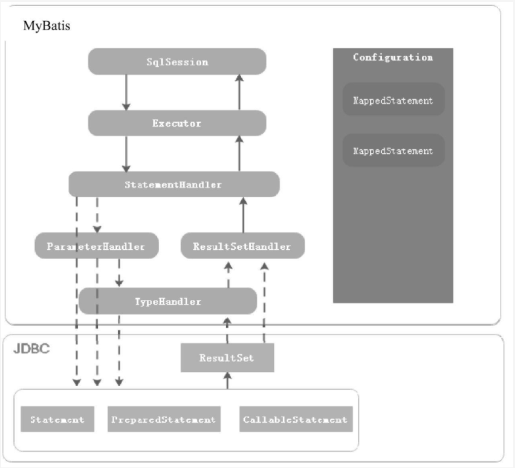Configuration
Mybatis的配置信息有两种，一种是用来描述Mybatis的主配置信息，一种是用来配置执行SQL语句的Mapper配置文件。
Configuration是用来描述Mybatis的主配置信息的，其他组件需要获取配置信息的时候，直接通过Configuration对象获取。除此之外，MyBatis在应用启动时，将Mapper配置信息，类型别名，TypeHandler等注册到Configuration组件中，其他组件需要这些信息时，也可以从Configuration对象中获取。
三大作用：
- 用于描述MyBatis配置信息，项目启动时，所有的配置信息都会转换为configuration对象；
- 作为中间这简化MyBatis各个组件之间的交互，属于中介者模式的应用；
- 作为Executor, ParameterHandler, ResultSetHandler, StatementHandler组件的工厂，便于创建这些组件的实例
MappedStatement
用来描述Mapper中的SQL配置信息，是对XML配置文件中///等标签或者@Select/@Update等注解配置信息的封装。
SqlSession
是Mybatis提供的面向用户的API，表示和数据库交互时的会话对象，用于完成数据库的CRUD功能，SqlSession是Executor组件的外观，目的是对外提供易于理解和使用的数据库操作接口；
Executor
是Mybatis的SQL执行器，在Mybatis中对数据库所有的增删改查操作都是由Executor组件完成的。
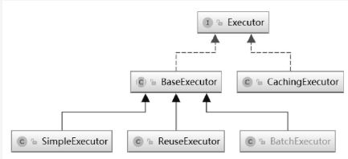SimpleExecutor：能够完成基本的增删改查操作
ReuseExecutor：对JDBC的Statement做了缓存，当执行同样的SQL时，直接从缓存中取Statement，避免了频繁创建和销毁，从而提升系统性能；
BatchExecutor：会对调用同一个Mapper执行的update，insert和delete操作，调用Statement对象的批量处理功能。
CachingExecutor：我们知道Mybatis支持一二级缓存，当开启了二级缓存时，会使用CachingExecutor对上面三个进行装饰，为查询增加二级缓存功能。用到了装饰者模式的设计模式
Executor是在SqlSessionFactory.openSession的时候创建的。
StatementHandler
封装了对JDBC Statement对象的使用，比如为Statement对象设置参数，调用Statement接口与数据库交互等等。
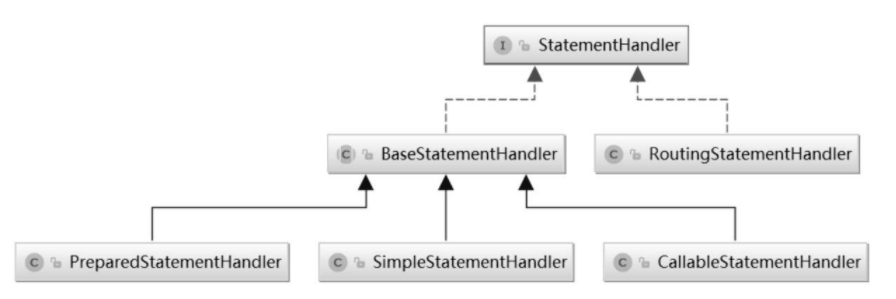BaseStatementHandler：抽象类，封装了通用逻辑和方法执行流程，使用了模板方法模式；
SImpleStatementHandler：封装了对JDBC中Statement对象的操作；
PreparedStatementHandler：封装了对JDBC中PreparedStatement对象的操作；
CallableStatementHandler：封装了对JDBC中CallableStatement对象的操作；
RoutingStatementHandler：会更具Mapper配置中的statementType属性（取值为STATEMENT，PREPARED或CALLABLE）创建对应的StatementHandler的实现
ParameterHandler
当Mybatis框架使用的Statement类型是PreparedStatement和CallableStatement时，ParameterHandler用于为Statement对象参数占位符设置值。
比较简单，就一个实现：拿到sql中所有的参数，遍历所有的参数，如果需要设值，就获取TypeHandler，然后通过TypeHandler对这个占位符设值。
ResultSetHandler
封装了对JDBC中ResultSet的使用，当MyBatis执行的SQL类型是SELECT语句时，ResultSetHandler用于将查询结果转换成Java对象。
一样比较简单，只有一个默认的实现。
TypeHandler
是Mybatis中的类型处理器，用于处理Java类型与JDBC类型之间的映射。它的作用主要体现在能够根据Java类型调用PreparedStatement（JDBC的）或CallableStatement（JDBC的）对象对应的SetXXX()方法为Statement对象设置值，而且能够根据Java类型调用ResultSet（JDBC的）对象赌赢的getXXX()获取SQL执行结果。
简单的说：及时jdbc类型和Java类型处理映射的关系；
Mybatis通过TypeHandlerRegistry建立JDBC类型，Java类型与Typehandler之间的映射关系；这个类的逻辑比较简单，就是在维护了三个map，分别是jdbc类型与TypeHander的关系，Java类型与Jdbc类型与TypeHander的关系，TypeHander的class与TypeHander之间的关系；这三个map会在TypeHandlerRegistry的无参构造方法中进行register，而这个无参构造方法是在Configuration中被调用的。
总结
Mybatis通过sqlSession操作数据库，sqlSession是用户层面的API。
实际上sqlSession是Executor组件的外观（外观模式），目的是为用户提供更友好的方式操作数据库。
真正执行sql操作的是Executor组件，Executor组件可以理解为SQL的执行器，它会使用StatementHandler组件对JDBC的Statement对象进行操作。
当Statement类型是CallableStatement和PreparedStatement时，会通过ParameterHandler组件为参数占位符赋值。
ParameterHandler组件中会根据Java类型找到对应的TypeHandler对象；
TypeHandler中会通过Statement提供的setXXX方法为Statement对象中的参数占位符进行设值。
StatementHandler组件使用JDBC中的Statement对象与数据库完成交互后，当SQL语句类型是SELECT时，Mybatis通过ResultSetHandler组件从Statement对象中获取ResultSet对象，然后将ResultSet对象转换为Java对象。
5 SqlSession的创建过程
sqlSession是Mybatis的最顶层API，来学习一下它的创建过程，从三个部分入手
- Configuration实例的创建过程
- SqlSessionFactory实例的创建过程
- SqlSession实例化的过程
5.1 Configuration实例的创建过程
Configuration是Mybatis中比较重要的组件，我们知道mybatis有两种配置文件，一种是描述sql的mapper.xml配置文件，一种是描述mybatis配置的文件；Configuration的创建和xml文件密切相关，但是怎么从xml文件到Configuration的呢？
- 涉及到xml文件的解析，mybatis采用的XPath解析xml文件，将配置信息转换成Configuration对象的；（不细说）
- MyBatis封装了XPathParser工具类，简化了XPath的操作，可以方便的获取节点属性，子节点信息等
Configuration有三个作用：
- 用于描述MyBatis配置信息，例如标签配置的参数信息
- 作为容器注册Mybatis的其他组件,例如TypeHandler，MappedStatement等
- 提供工厂方法，创建ResultSethandler，StatementHandler，Executor，Parameterhandler等
Configuration的创建流程
- 入口：MyBatis通过XMLConfigBuilder来创建Configuration对象的；XMLConfigBuilder接收一个xml配置文件的输入流，调用parse()方法，返回一个Configuration对象。
- XMLConfigBuilder的parse()方法，会先解析configuration标签，然后通过parseConfiguration()这个方法，解析mybatis的所有标签，每一个标签的解析都有一个单独的方法。
- 当所有的方法都解析完成之后，就得到了我们的configuration对象。
Reader reader = Resources.getResourceAsReader("mybatis-config.xml");
// 创建XMLConfigBuilder实例
XMLConfigBuilder builder = new XMLConfigBuilder(reader);
// 调用XMLConfigBuilder.parse（）方法，解析XML创建Configuration对象
Configuration conf = builder.parse();5.2 SqlSessionFactory实例的创建过程
mybatis中的sqlSession是使用工厂模式创建的。所以在创建sqlSession之前，需要先创建SqlSessionFactory对象；然后调用工厂的openSession()方法，得到一个sqlSession对象。
sqlSession是mybatis面向用户的最顶层的API；
// 获取Mybatis配置文件输入流
Reader reader = Resources.getResourceAsReader("mybatis-config.xml");
// 通过SqlSessionFactoryBuilder创建SqlSessionFactory实例
SqlSessionFactory sqlSessionFactory = new SqlSessionFactoryBuilder().build(reader);
// 调用SqlSessionFactory的openSession（）方法，创建SqlSession实例
SqlSession session = sqlSessionFactory.openSession();为了创建sqlSessionFactory对象，首先创建了一个SqlSessionFactoryBuilder对象，然后调用它的build方法，返回一个SqlSessionFactory对象；
那么他的build方法都做了什么事情呢？
public SqlSessionFactory build(Reader reader, String environment, Properties properties) {
try {
XMLConfigBuilder parser = new XMLConfigBuilder(reader, environment, properties);
return build(parser.parse());
}
....
}build方法调用重载的build方法，创建了一个XMLConfigBuilder对象，通过XMLConfigBuilder的parse方法得到一个configuration对象，然后再次调用build方法，就可以得到一个SqlSessionFactory对象。
这里的build方法又做了什么呢？
public SqlSessionFactory build(Configuration config) {
return new DefaultSqlSessionFactory(config);
}就是仅仅的一个new而已。这样就得到了SqlSessionFactory对象。接下来看怎么获取sqlSession呢？
5.3 SqlSession实例化的过程
得到了SqlSessionFactory对象。接下来看怎么获取sqlSession呢？
拿到sqlSessionFactory后，通过factory的openSession可以得到一个sqlSession对象；openSession都干了什么呢？
private SqlSession openSessionFromDataSource(ExecutorType execType, TransactionIsolationLevel level, boolean autoCommit) {
Transaction tx = null;
try {
//获取mybatis主配置文件的环境信息
final Environment environment = configuration.getEnvironment();
//创建事务管理器工厂
final TransactionFactory transactionFactory = getTransactionFactoryFromEnvironment(environment);
//创建事务管理器
tx = transactionFactory.newTransaction(environment.getDataSource(), level, autoCommit);
//根据mybatis主配置文件的executorType的类型创建对应的executor实例（我们知道mybatis执行sql使用过Executor执行的）
final Executor executor = configuration.newExecutor(tx, execType);
//创建defaultSqlSession实例
return new DefaultSqlSession(configuration, executor, autoCommit);
} catch (Exception e) {
// may have fetched a connection so lets call close()
closeTransaction(tx);
throw ExceptionFactory.wrapException("Error opening session. Cause: " + e, e);
} finally {
ErrorContext.instance().reset();
}
}获取mybatis主配置文件的环境信息，然后通过环境信息获取事务管理器工厂，通过事务管理器工厂获取事务管理器；
然后获取mybatis主配置文件的executorType类型，和事务管理器一起创建Executor实例；
最后获取sqlSession对象。sqlSession对象中持有executor对象的引用，真正执行SQL操作的是Executor对象。
6 SqlSession执行Mapper的过程
MyBatis的Mapper是由两部分组成：
- 一个是Mapper接口：XXXMapper.java
public interface UserMapper {
List<UserEntity> listAllUser();
@Select("select * from user where id=#{userId,jdbcType=INTEGER}")
UserEntity getUserById(@Param("userId") String userId);
List<UserEntity> getUserByEntity( UserEntity user);
}- 一个是通过注解或者是XML配置的：XXXMapper.xml
<?xml version="1.0" encoding="UTF-8" ?>
<!DOCTYPE mapper PUBLIC "-//mybatis.org//DTD Mapper 3.0//EN"
"http://mybatis.org/dtd/mybatis-3-mapper.dtd">
<mapper namespace="com.blog4java.mybatis.example.mapper.UserMapper">
<sql id="userAllField">
id,create_time, name, password, phone, nick_name
</sql>
<select id="listAllUser" resultType="com.blog4java.mybatis.example.entity.UserEntity" >
select
<include refid="userAllField"/>
from user
</select>
</mapper>
6.1 Mapper 接口的注册和获取（动态代理）过程
既然是说注册和获取过程，肯定是两个部分，注册和获取；我们先从获取来看，因为简单。
Mapper接口用来定义执行SQL语句相关的方法。
@Test
public void testMybatis () throws IOException {
// ...
// 获取SqlSession实例
SqlSession sqlSession = sqlSessionFactory.openSession();
// 获取UserMapper代理对象
UserMapper userMapper = sqlSession.getMapper(UserMapper.class);
// 执行Mapper方法，获取执行结果
List<UserEntity> userList = userMapper.listAllUser();
System.out.println(JSON.toJSONString(userList));
}sqlSession.getMapper()获取了一个UserMapper的引用，返回的这个引用到底是什么呢？
我们知道接口中定义的方法一定要通过某个类实现，然后创建这个实现类的实例，才能调用方法。
那么sqlSession.getMapper()方法返回的一定是某个类的实例，是哪个类呢？
其实返回的是一个动态代理对象；下面从两个部分来解析这个部分：
- 简单而标准的JDK动态代理是什么样子的？
- Mybatis的动态代理怎么实现的？
简单而标准的动态代理，代码可以参考mybatis-chapter06
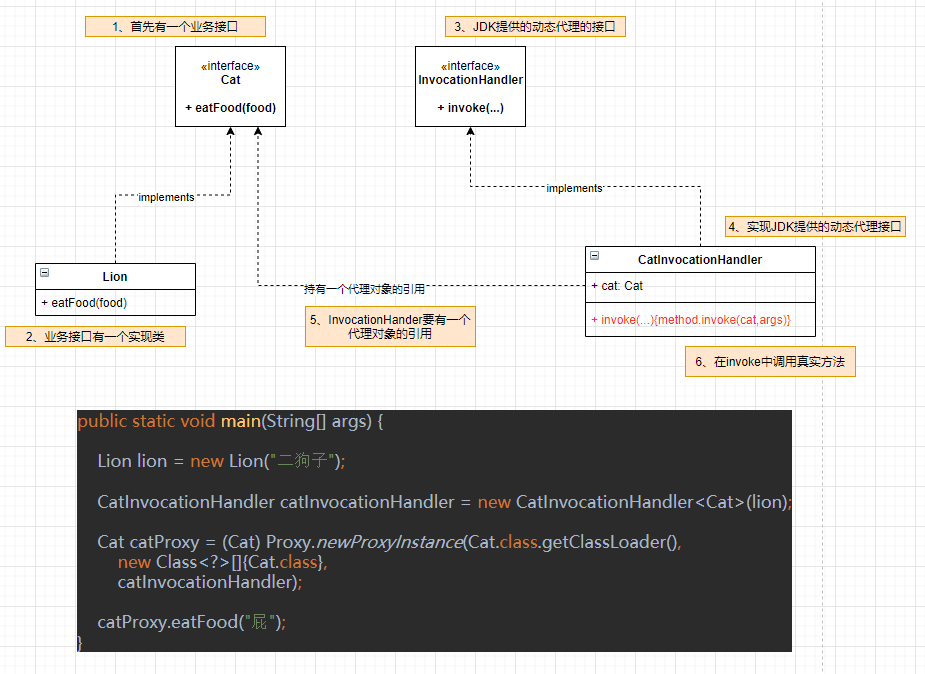Mybatis的动态代理怎么实现的？
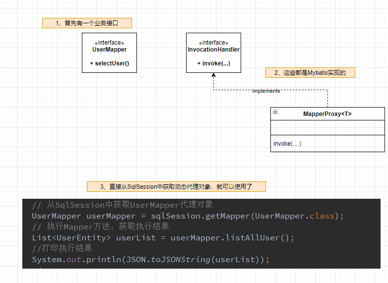sqlSession.getmapper做了什么事情呢？
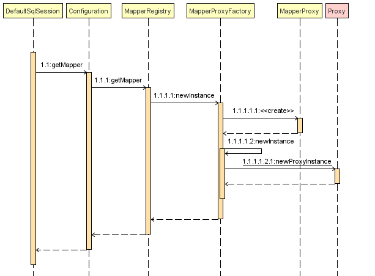简单的描述就是：
1、SqlSession.getMapper()调用的是DefaultSqlSession中的getMapper();
2、DefaultSqlSession中的getMapper()是从configuration中getMapper中获取；
3、configuration中getMapper调用的是MapperRegistry的getMapper;
4、MapperRegistry的getMapper是从自己的一个属性中获取：knownMappers.get()，获取代理工厂MapperProxyfactory；
5、然后代理工厂MapperProxyfactory通过newInstance方法，调用Proxy(JDK)生成动态代理对象。
在这里，有一个问题，对比标准的代理方式，我们发现mybatis的代理方式，好像没有持有被代理对象的引用？那么这个动态代理，代理的是什么呢？？ —-> 按住ctrl,点我查看答案
在第4步中，从knownMappers中后获取代理工厂，拿到代理工厂，就可以创建代理对象了，那么，knownMappers是什么时候注册进去的呢？这里就说了我们的Mapper接口的注册过程；
knownMappers是一个Map对象，它里面维护的是：Mapper接口对应的class对象 和 代理工厂对象的关系；
knownMappers是类MapperRegistry的一个属性，在MapperRegister中提供一个方法addMappers，通过这个方法可以注册：Mapper接口对应的class对象 和 代理工厂对象的关系；（同时MapperRegistry还有getMapper方法，可以用来获取）
那么这个addMapper是什么时候调用的呢？？这里先简单的说一下，后面还会再提到。
在Configuration初始化的时候，我们知道Configuration的初始化，是从过XMLConfigBuilder中的parse方法初始化的，在parse方法中初始化了很多的属性，其中就包括mapper的初始化。
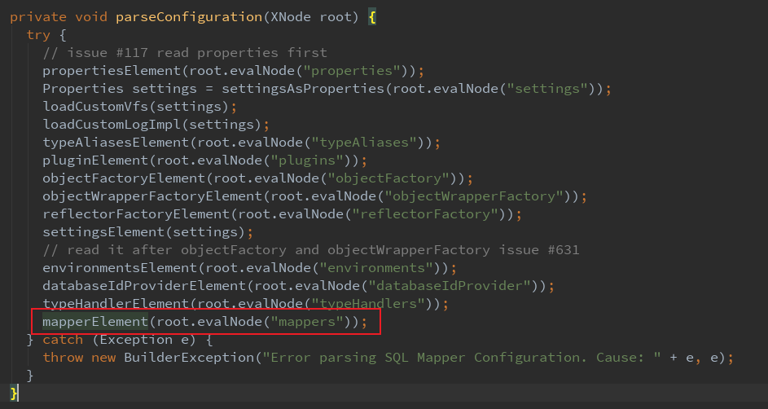在mapper初始化的方法中mapperElement中，调用了configuration的addMapper方法，然后调用了mapperRegistry.addMappers;最终会调用到我们期望调用的方法；
6.2 Mapper XML配置信息的解析和注册过程
前面说过，MyBatis通过MappedStatement描述Mapper的SQL配置信息，SQL配置有两种方式：
- 一种是通过XML文件配置
- 一种是通过Java注解（其实本质就是一种轻量级的配置信息）
流程图搞了几天，都弄不出来，简单点，用语言描述一下
1、我们知道解析xml，都要解析之后保存在Configuration中，那么找到configuration的解析入口：
XMLConfigBuilder#parseConfiguration2、因为这里说的是解析mapper，我们找到专门解析mapper标签的方法；
org.apache.ibatis.builder.xml.XMLConfigBuilder#mapperElementprivate void mapperElement(XNode parent) throws Exception {
if (parent != null) {
for (XNode child : parent.getChildren()) {
if ("package".equals(child.getName())) {
String mapperPackage = child.getStringAttribute("name");
//这里就是将mapper，找到对应的mapper文件和mapper class，保存在mapperRegistry中
configuration.addMappers(mapperPackage);
} else {
if (resource != null && url == null && mapperClass == null) {
//通过 resource 属性指定XML文件路径
ErrorContext.instance().resource(resource);
try(InputStream inputStream = Resources.getResourceAsStream(resource)) {
XMLMapperBuilder mapperParser = new XMLMapperBuilder(inputStream, configuration, resource, configuration.getSqlFragments());
mapperParser.parse();
}
}
}
}
}
}3、在上面的代码中，进入到
mapperParser.parse();在这个方法里面解析所有的sql，并将sql生成MappedStatement，保存在configuration中；
public void parse() {
if (!configuration.isResourceLoaded(resource)) {
//调用XPathParser的evalNode()方法获取根节点对应的XNode对象，
//然后开始解析所有的sql
configurationElement(parser.evalNode("/mapper"));
//将资源路径添加到Configuration中
configuration.addLoadedResource(resource);
//
bindMapperForNamespace();
}
//之前已经解析过一遍了，如果出了异常，继续解析之前出现异常的ResultMap对象
parsePendingResultMaps();
//之前已经解析过一遍了，如果出了异常，继续解析之前出现异常的CacheRef对象
parsePendingCacheRefs();
//之前已经解析过一遍了，如果出了异常，继续解析之前出现异常的select|insert|update|delete对象
parsePendingStatements();
}4、进入到主要的解析方法中
org.apache.ibatis.builder.xml.XMLMapperBuilder#configurationElement,在这个方法里面，解析所有的具体的sql语句；
private void configurationElement(XNode context) {
try {
//获取命名空间，命名空间不能为空
String namespace = context.getStringAttribute("namespace");
if (namespace == null || namespace.isEmpty()) {
throw new BuilderException("Mapper's namespace cannot be empty");
}
//设置当前正在解析的mapper的名称空间
builderAssistant.setCurrentNamespace(namespace);
cacheRefElement(context.evalNode("cache-ref"));
cacheElement(context.evalNode("cache"));
parameterMapElement(context.evalNodes("/mapper/parameterMap"));
resultMapElements(context.evalNodes("/mapper/resultMap"));
sqlElement(context.evalNodes("/mapper/sql"));
buildStatementFromContext(context.evalNodes("select|insert|update|delete"));
} catch (Exception e) {
throw new BuilderException("Error parsing Mapper XML. The XML location is '" + resource + "'. Cause: " + e, e);
}
}5、这个方法里面解析了很多，我们以解析crud的sql为例，进入到
TextbuildStatementFromContext(context.evalNodes("select|insert|update|delete"));
，然后在进入到
Textorg.apache.ibatis.builder.xml.XMLMapperBuilder#buildStatementFromContext(java.util.List<org.apache.ibatis.parsing.XNode>, java.lang.String)
到这里面就比较清晰了。
6、使用XMLStatementBuilder进行解析，
TextstatementParser.parseStatementNode();
解析的方法很长，就不一一列举了，当解析完成的时候，会调用builderAssistant的方法，这是一个辅助类。
Textpublic void parseStatementNode() { //解析select|insert|update|delete标签 //将<include>标签替换成<sql>中的内容 //获取languageDriver对象 // Parse selectKey after includes and remove them. // Parse the SQL (pre: <selectKey> and <include> were parsed and removed) //通过languageDriver解析SQL内容，生成SqlSource对象 //默认的Statement类型是PreparedStatement builderAssistant.addMappedStatement(id, sqlSource, statementType, sqlCommandType, fetchSize, timeout, parameterMap, parameterTypeClass, resultMap, resultTypeClass, resultSetTypeEnum, flushCache, useCache, resultOrdered, keyGenerator, keyProperty, keyColumn, databaseId, langDriver, resultSets); }
7、在builderAssistant.addMappedStatement中，会调用configuration.addMappedStatement(statement);将生成的MappedStatement放在configuration中。
6.3 Mapper 接口中的方法调用过程
我们知道，mybatis的方法调用的过程，其实是调用动态代理对象的invoke方法，所以，想知道接口方法的调用过程，就看看invoke方法的执行过程。
Text// 从SqlSession中获取UserMapper代理对象 UserMapper userMapper = sqlSession.getMapper(UserMapper.class); // 执行Mapper方法，获取执行结果 List<UserEntity> userList = userMapper.listAllUser();
上面代码通过获取到的userMapper调用listAlluser的时候，其实userMapper对象已经是一个动态代理对象了。当这个方法执行的时候，其实执行的是MapperProxy的invoke方法；
MapperProxy的invoke方法的代码很简单：
Text@Override public Object invoke(Object proxy, Method method, Object[] args) throws Throwable { try { if (Object.class.equals(method.getDeclaringClass())) { //如果是继承自Object的类，就直接执行，不处理 return method.invoke(this, args); } else { //通过cachedInvoker获取MapperMethodInvoker return cachedInvoker(method).invoke(proxy, method, args, sqlSession); } } catch (Throwable t) { throw ExceptionUtil.unwrapThrowable(t); } }
1、继承自Object的就不说了，看else里面的。
TextcachedInvoker(method)
这个方法是mybatis新版本里面的，之前不是这样的。
2、这个方法主要作用是根据动态代理对象调用的方法，判断是否是默认方法（jdk8提供的接口也可以有方法实现体）
3、如果是默认方法，就获取MethodHandle，然后封装成DefaultMethodInvoker；这里不说，不是我们关注的重点。
4、如果不是默认方法，就是调用的mapper接口中的方法，就获取MapperMethod，然后封装成PlainMethodInvoker；这个是重点。
5、获取到MapperMethodInvoker之后，调用invoke方法，重点关注PlainMethodInvoker的invoke方法内容。在这个方法内部，调用了MapperMethod的execute方法。
6、execute方法中的内容，我们等会再说，先回过头看看MapperMethod是个什么东西？
7、MapperMethod中包含SqlCommand（封装了SQL语句的类型和Mapper的ID）和MethodSignature（方法签名，返回值类型，分页信息和参数信息）；分别来看这两个内部类。
8、SqlCommand：
Textpublic SqlCommand(Configuration configuration, Class<?> mapperInterface, Method method) { final String methodName = method.getName(); // 获取声明该方法的类或接口的Class对象，目的是为了获取MappedStatement final Class<?> declaringClass = method.getDeclaringClass(); // 获取描述 insert,update 等标签的MappedStatement对象 MappedStatement ms = resolveMappedStatement(mapperInterface, methodName, declaringClass, configuration); // 目的就是为了从MappedStatement中获取id和type name = ms.getId(); type = ms.getSqlCommandType(); }
9、MethodSignature：
Textpublic MethodSignature(Configuration configuration, Class<?> mapperInterface, Method method) { //获取方法的返回值类型 Type resolvedReturnType = TypeParameterResolver.resolveReturnType(method, mapperInterface); ..... //RowBounds参数位置索引,用于处理后续的分页查询 this.rowBoundsIndex = getUniqueParamIndex(method, RowBounds.class); //ResultHander参数位置索引，用于处理数据库中检索的每一行数据 this.resultHandlerIndex = getUniqueParamIndex(method, ResultHandler.class); //ParamNameResolver用于解析Mapper方法参数 this.paramNameResolver = new ParamNameResolver(configuration, method); }
其中new ParamNameResolver(configuration, method)需要说一说，这个类是用来描述sql的参数信息。
- 将@params注解的参数获取到；
- 如果没有注解，检查参数useActualParamName，使用参数名称作为sql参数的名字。
- 获取到所有的参数之后，保存在map中，放在不可变的names中。
10、说完了SqlCommand和MethodSignature，在回过头看MapperMethod的execute方法；
- 首先根据SqlCommand对象获取sql语句的类型；
- 然后根据sql语句的类型调用sqlSession对象对应的方法；（sqlSession是mybatis提供的用户层面的API，方便操作，mybatis中真正执行的是Executor组件）
好了，结束了，在往下看，就是sqlSession怎么执行一个sql的了。
6.4 SqlSession执行Mapper的过程
mybatis生成动态代理之后，调用mapperProxy的invoke方法，在invoke方法中，最终会调用sqlSession的方法，以查询为例子，会调用
TextsqlSession.selectList(command.getName(), param);
,我们知道sqlSession是mybatis提供的用户层面的API，方便用户查询操作的，所以我们看下他具体是怎么执行查询的呢？
1、selectList会不停的调用重载方法，最终调用到：
Textprivate <E> List<E> selectList(String statement, Object parameter, RowBounds rowBounds, ResultHandler handler) { try { //MappedStatement是在mybatis启动的时候就解析xml加载进来了，这里只是根据sql的ID，拿到具体sql的MappedStatement MappedStatement ms = configuration.getMappedStatement(statement); // sqlSession是面向用户的API，真正执行查询的是executor执行器，它是哪里来的？ // 是当前sqlSession自带的，sqlSession哪里来的？是在最开始的时候openSession获取到的，然后session.getMapper将this传进来的。 // executor是在openSession时候赋值的 return executor.query(ms, wrapCollection(parameter), rowBounds, handler); } catch (Exception e) { throw ExceptionFactory.wrapException("Error querying database. Cause: " + e, e); } finally { ErrorContext.instance().reset(); } }
2、然后看executor.query方法
Text@Override public <E> List<E> query(MappedStatement ms, Object parameter, RowBounds rowBounds, ResultHandler resultHandler) throws SQLException { //获取BoundSql对象，BoundSql是对动态SQL解析生成的SQL语句和参数映射信息的封装 BoundSql boundSql = ms.getBoundSql(parameter); //创建cacheKey，用于缓存 CacheKey key = createCacheKey(ms, parameter, rowBounds, boundSql); //调用重载的query方法 return query(ms, parameter, rowBounds, resultHandler, key, boundSql); } //重载的query方法 public <E> List<E> query(MappedStatement ms, Object parameter, RowBounds rowBounds, ResultHandler resultHandler, CacheKey key, BoundSql boundSql) throws SQLException { try { queryStack++; //从缓存中获取结果 list = resultHandler == null ? (List<E>) localCache.getObject(key) : null; if (list != null) { handleLocallyCachedOutputParameters(ms, key, parameter, boundSql); } else { //缓存中获取不到，去数据库里面查询 list = queryFromDatabase(ms, parameter, rowBounds, resultHandler, key, boundSql); } return list; }
3、可以看到，最终的查询，会走到
TextqueryFromDatabase
这个方法中，这个方法的入参是MappedStatement（sql所有信息），parameter（参数信息），rowBounds（分页信息），resultHandler（处理结果集的），key（用户缓存），boundSql（sql和参数信息）；
4、
TextqueryFromDatabase
会调用
TextdoQuery
,它有很多实现，这里SimpleExecutor中的实现为例子:
Text@Override public <E> List<E> doQuery(.....) throws SQLException { Statement stmt = null; try { Configuration configuration = ms.getConfiguration(); //获取StatementHandler(Mybatis) StatementHandler handler = configuration.newStatementHandler(wrapper, ms, parameter, rowBounds, resultHandler, boundSql); //创建statement对象，并通过JDBC进行参数设置(JDBC) stmt = prepareStatement(handler, ms.getStatementLog()); //执行查询(Mybatis) return handler.query(stmt, resultHandler); } finally { closeStatement(stmt); } } //执行查询(Mybatis) @Override public <E> List<E> query(Statement statement, ResultHandler resultHandler) throws SQLException { //获取sql语句 String sql = boundSql.getSql(); //JDBC查询 statement.execute(sql); //处理结果集 return resultSetHandler.handleResultSets(statement); }
5、上面步骤中的参数处理，通过获取connection对象，创建statement，执行查询，获取结果，都是mybatis调用JDBC操作的。
6.5 处理结果集
6、现在来看一下处理结果集
Text// @Override public List<Object> handleResultSets(Statement stmt) throws SQLException { ErrorContext.instance().activity("handling results").object(mappedStatement.getId()); final List<Object> multipleResults = new ArrayList<>(); int resultSetCount = 0; //获取resultSet（JDBC）对象，将ResuleSet对象包装成ResultSetWrapper（MyBatis） ResultSetWrapper rsw = getFirstResultSet(stmt); //获取resultMap信息，一般只有一个：在xml中配置的resultMap List<ResultMap> resultMaps = mappedStatement.getResultMaps(); int resultMapCount = resultMaps.size(); validateResultMapsCount(rsw, resultMapCount); while (rsw != null && resultMapCount > resultSetCount) { ResultMap resultMap = resultMaps.get(resultSetCount); //处理结果集 handleResultSet(rsw, resultMap, multipleResults, null); rsw = getNextResultSet(stmt); cleanUpAfterHandlingResultSet(); resultSetCount++; } //这里一样，获取resultSet，也是xml中配置的 String[] resultSets = mappedStatement.getResultSets(); if (resultSets != null) { while (rsw != null && resultSetCount < resultSets.length) { ResultMapping parentMapping = nextResultMaps.get(resultSets[resultSetCount]); if (parentMapping != null) { String nestedResultMapId = parentMapping.getNestedResultMapId(); ResultMap resultMap = configuration.getResultMap(nestedResultMapId); //处理结果集 handleResultSet(rsw, resultMap, null, parentMapping); } rsw = getNextResultSet(stmt); cleanUpAfterHandlingResultSet(); resultSetCount++; } } //返回结果集 return collapseSingleResultList(multipleResults); }
6.56问题解决
6.6.1 Mybatis的动态代理代理的是什么？
mybatis的动态代理，其实谁都没有代理； 它仅仅只是生成了一个mapper实例，然后利用了动态代理的“切面”功能； 然后统一使用mapperMethod执行sql查询 标准的JDK动态代理，在真正执行的时候会调用method.invoke() Mybatis的动态代理在真正执行的时候根本没用到method
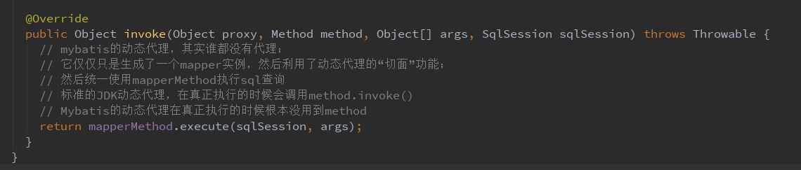7 Mybatis缓存
7.1 Mybatis 缓存（一级和二级）的使用
Mybatis缓存分为一级缓存和二级缓存；
- 一级缓存默认就是开启的，不能关闭，但是可以通过localCacheScope这个属性控制级别，这个参数的取值为SESSION、STATEMENT；
- SESSION：缓存对整个SqlSession有效，只有执行DML语句的时候，才会被清除。
- STATEMENT：缓存仅对当前执行的语句有效，当语句执行完毕后，缓存就被清空。
- 二级缓存
- mybaits的二级缓存是mapper范围级别（二级缓存是基于namespace级别的，在同一个Mapper下有效），需要的话首先要在mybatis主配置文件中开启缓存<setting name=”cacheEnabled”value=”true”/>
- 然后在需要二级缓存的具体mapper中配置cache，配置缓存策略，缓存刷新频率，缓存的容量等
- 在配置mapper时，通过useCache属性执行mapper执行的时候是否使用缓存，还可以通过flushCache属性执行Mapper执行后是否刷新缓存。
7.2 Mybatis缓存框架的实现（装饰者模式）
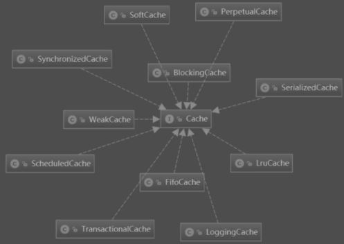Textpublic interface Cache { /** * 获取缓存的id，通常情况下缓存的id是Mapper的命名空间名称 */ String getId(); /** * 讲一个Java对象添加到缓存中 */ void putObject(Object key, Object value); Object getObject(Object key); Object removeObject(Object key); /** * Clears this cache instance. */ void clear(); int getSize(); /** * 在3.2.6版本后已经不在使用 */ default ReadWriteLock getReadWriteLock() { return null; } }
Mybatis的缓存设计采用的是装饰者模式，装饰者模式用的最经典的例子就是Java的IO包，Mybatis同样采用了装饰者模式。
- 提供一个接口Cache，提供缓存的基本操作，比如：put，get，remove，clear等
- 提供一个基本实现：PerpetualCache，仅使用HashMap存放缓存对象。
- 提供了大量的装饰器，这些装饰器的构造方法入参就是Cache，比如BlockingCache（阻塞的缓存装饰器），FifoCache（先入先出缓存装饰器）等等
Text@Test public void testCache() { final int N = 100000; Cache cache = new PerpetualCache("default"); cache = new LruCache(cache); cache = new FifoCache(cache); cache = new SoftCache(cache); cache = new WeakCache(cache); cache = new ScheduledCache(cache); cache = new SerializedCache(cache); cache = new SynchronizedCache(cache); cache = new TransactionalCache(cache); for (int i = 0; i < N; i++) { cache.putObject(i, i); ((TransactionalCache) cache).commit(); } System.out.println(cache.getSize()); }
- 另外，还提用了一个CacheBuilder方法构建缓存对象。
Text@Test public void testCacheBuilder() { final int N = 100000; Cache cache = new CacheBuilder("com.blog4java.mybatis.example.mapper.UserMapper") .implementation( PerpetualCache.class) .addDecorator(LruCache.class) .clearInterval(10 * 60L) .size(1024) .readWrite(false) .blocking(false) .properties(null) .build(); for (int i = 0; i < N; i++) { cache.putObject(i, i); } System.out.println(cache.getSize()); }
7.3 一级缓存的具体实现
- 我们知道sqlSession是面向用户的API，真正执行的操作的是Executor，以查询为例，在Executor中的具体实现类BaseExecutror中的query方法中，我们知道，执行一个select语句的时候，会先从缓存中获取数据，如果缓存中没有，才会去数据库中查，并且从数据库中查到之后，还会放到缓存中。
- 这里涉及到两个属性，这两个属性存在BaseExecutor中
- localCache：Mybatis一级缓存对象，用于缓存Mybatis的查询结果
- localOutputParameterCache：Mybatis存储过程输出参数缓存，用于缓存存储过程调用结果
- 这里主要探讨一下localCache，看一下一级缓存是怎么实现的。
- 需要了解一下CacheKey的实现，如果两个查询的CacheKey一样，就认定为是同一个sql；
- Cache的生成在CacheKey key = createCacheKey(ms, parameter, rowBounds, boundSql);
- Cache的生成和Mapper的id，执行的sql的参数，以及mapper的的namespace有关；
- key生成之后，就是关于一级缓存的使用了（用来做什么的），还是以查询为例，当查询的时候，会先从缓存中获取数据，如果缓存中没有，才会去数据库中查，并且从数据库中查到之后，还会放到缓存中。
- 注意：如果一级缓存的范围设置为localCacheScope=STATEMENT，则每次查询操作完成后，都会清空缓存。
- 注意：在分布式环境下，务必将localCache设置为STATEMENT，避免其他节点执行SQL更新语句之后，本节点缓存得不到刷新而导致数据一致性的问题。
7.4 二级缓存的具体实现
7.4.1 二级缓存的两点常识
了解二级缓存之前，先了解下面两个常识：
- 二级缓存默认是关闭的，需要开启，具体开启方法，参考：7.1 Mybatis 缓存（一级和二级）的使用
- 还是以查询为例，真正执行查询的是Executor，Executor有几种不同的实现（BaseExecutor不是实现，是抽象类）
- SImpleExecutor
- BatchExecutor
- ReuseExecutor
- CachingExecutor（比较特殊，用到了装饰者模式，在其他几种Executor基础上，增加了二级缓存功能）
7.4.2 Mybatis是怎么创建CachingExecutor的呢
如果我们配置二级缓存为开启状态，那么Mybatis是怎么创建CachingExecutor的呢？涉及到两部分：
- CachingExecutor是怎么创建出来的？
- Executor采用工厂模式创建，Configuration类提供了一个工厂方法，newExecutor
- 可以看到CachingExecutor是对其他三个Executor的装饰；
- 然后再继续分析CachingExecutor的具体实现；
- 二级缓存开启之后，Mybatis怎么知道它开启了（CacheEnabled这个属性是什么时候初始化的）
- 在XmlConfigBuilder中，parseConfiguration()中的settingsElement()方法中。
Textconfiguration.setCacheEnabled(booleanValueOf(props.getProperty("cacheEnabled"), true));
7.4.3 CachingEexcutor的具体实现
- CachingEexcutor的具体实现
- 这个类的代码比较少；看他的属性：
Text//delegate是被装饰的Executor private final Executor delegate; //这个就比较重要了，用于管理所有的二级缓存对象 private final TransactionalCacheManager tcm = new TransactionalCacheManager();
- TransactionalCacheManager的实现
- 接下来，以查询为例，看看二级缓存是怎么工作的
7.4.4 以查询为例，看看二级缓存是怎么工作的
- 执行查询
Text@Override public <E> List<E> query(....) throws SQLException { Cache cache = ms.getCache(); if (cache != null) { flushCacheIfRequired(ms); //如果当前sql开启了二级缓存（就是mapper.xml中的select|update|delete|insert标签中使用了useCache=true这个属性） if (ms.isUseCache() && resultHandler == null) { ensureNoOutParams(ms, boundSql); //先从二级缓存中获取(使用二级缓存管理器TransactionalCacheManager进行获取) @SuppressWarnings("unchecked") List<E> list = (List<E>) tcm.getObject(cache, key); //如果获取不到，就用原来的Executor（也就是被装饰的Executor进行获取）：先从一级缓存拿，拿不到，再从数据库中拿 if (list == null) { list = delegate.query(ms, parameterObject, rowBounds, resultHandler, key, boundSql); // issue #578 and #116 tcm.putObject(cache, key, list); } return list; } } return delegate.query(ms, parameterObject, rowBounds, resultHandler, key, boundSql); }
- 执行更新语句
Text@Override public int update(MappedStatement ms, Object parameterObject) throws SQLException { flushCacheIfRequired(ms); return delegate.update(ms, parameterObject); } private void flushCacheIfRequired(MappedStatement ms) { Cache cache = ms.getCache(); //判断是否需要刷新缓存，（就是mapper.xml中的select|update|delete|insert标签中使用了flushCache=true这个属性） if (cache != null && ms.isFlushCacheRequired()) { tcm.clear(cache); } }
7.4.5 二级缓存Cache实例的创建
在7.4.4中我们看到，不管是执行查询，还是执行更新，我们都要获取两个参数
- 一个是Cache对象（从MappedStatement中获取的）：这是二级缓存对象–>对应的是mapper.xml中的cache标签
- 一个就是CacheKey
- 获取到这两个参数之后，才可以通过二级缓存管理器TransactionalCacheManager获取对应的缓存
CacheKey的创建我们已经知道了，是和sqlID，sql的参数信息，nameSpace有关的。那么二级缓存对象实例Cache对象是什么时候创建的，并且是什么时候保存到MappedStatement中的呢？
- 在
Textorg.apache.ibatis.builder.xml.XMLMapperBuilder#parse
这个方法中，会解析cache标签；
- cache标签解析之后，会通过builderAssistant辅助工具类创建Cache实例（用到的是Cache的builder模式）；
Textpublic Cache useNewCache(Class<? extends Cache> typeClass, Class<? extends Cache> evictionClass, Long flushInterval, Integer size, boolean readWrite, boolean blocking, Properties props) { Cache cache = new CacheBuilder(currentNamespace) .implementation(valueOrDefault(typeClass, PerpetualCache.class)) .addDecorator(valueOrDefault(evictionClass, LruCache.class)) .clearInterval(flushInterval) .size(size) .readWrite(readWrite) .blocking(blocking) .properties(props) .build(); configuration.addCache(cache); currentCache = cache; return cache; }
- Cache对象创建完成之后，除了保存到configuration中，还会先暂时保存在当前这个辅助工具类中
TextMapperBuilderAssistant
- 然后是什么时候，将cache对象保存到MappedStatement中的呢？
Textprivate void configurationElement(XNode context) { try { .... //解析cache标签，生成Cache对象，保存到configuration中，并且暂存在builderAssistant中 cacheElement(context.evalNode("cache")); ..... //在这里，解析完select|insert|update|delete,会调用addMappedStatement这个方法 buildStatementFromContext(context.evalNodes("select|insert|update|delete")); } catch (Exception e) { throw ... } }
- 在上面的代码中，我们知道解析完select|insert|update|delete,会调用
Textorg.apache.ibatis.builder.MapperBuilderAssistant#addMappedStatement(...)
这个方法
Textpublic MappedStatement addMappedStatement(....) { .... MappedStatement.Builder statementBuilder = new MappedStatement.Builder(...) ..... .useCache(valueOrDefault(useCache, isSelect)) //在这里，就将暂存在MapperBuilderAssistant中的cache对象赋值给了MappedStatement .cache(currentCache); return statement; }
7.5 问题解决？？？？？
7.5.1 实际项目中，比如东南亚项目中，怎么控制的缓存呢？
目前还没有找到答案，应该和mybatis-spring有关，因为代码使用的JavaConfig类进行配置的，不是使用xml，没找到具体的配置在哪里。
8 Mybatis日志实现
常见的日志框架
- Log4j：是欧洲一个项目组开发的日志实现，现在是apache基金会的一个项目（1996）
- Log4j2：是apache开发的日志实现，Log4j的升级版（2012）
- Commons Logging（JCL）：Apache的，一套Java日志接口，本身只有一个简单的实现（2002下）
- SLF4J：类似于Commons Logging，也是日志接口，本身没有实现（2006）
- Logback：是日志组件的具体实现，属于SLF4J的阵营（2006）
- JUL：JDK1.4之后java提供日志实现（2002上）
9 动态SQL实现原理
动态SQL，顾名思义，就是事先无法预知具体的条件，需要在运行的时候根据具体的情况动态的生成SQL语句。
比如下面的SQL，就是一个动态的SQL
Text<select id="getUserByEntity" resultType="com.blog4java.mybatis.example.entity.UserEntity"> select <include refid="userAllField"/> from user <where> <if test="id != null"> AND id = #{id} </if> <if test="name != null"> AND name = #{name} </if> <if test="phone != null"> AND phone = #{phone} </if> </where> </select>
我们的入参可能是id，可能是name，可能是phone，也可能是这三个参数中任意两个或者三个的组合。
当我们SQL的参数不固定的时候，生成SQL就需要根据参数动态来增加或者去除关键字，比如添加上WHERE，去掉多余的AND，OR等。
9.1 动态SQL的使用
主要是一些涉及的标签
- <choose|when|otherwise>
- <trim|set>
9.2 SqlSource、BoundSql、LanguageDriver、SqlNode详解和它们之间的关系
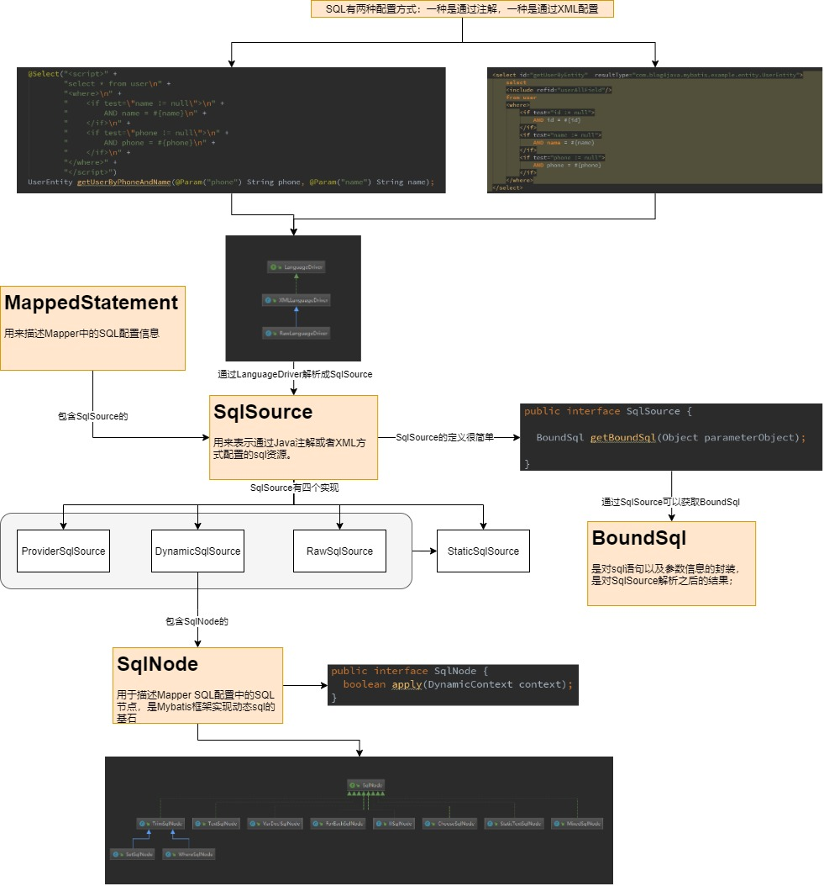9.3 动态SQL解析过程
SqlSource有四个实现，分别是ProviderSqlSource,DynamicSqlSource,RawSqlSource,StaticSqlSource; 其中StaticSqlSource比较特殊，它是用来描述通过ProviderSqlSource,SynamicSqlSource,RawSqlSource解析之后得到的静态sql资源。
- 1、通过注解或者xml配置的sql怎么封装成SqlSource对象的？（SqlSource是怎么来的）
- 是通过LanguageDriver将Sql配置解析成SqlSource的，什么时候解析的呢？解析的逻辑是什么呢？
- 是在XmlMapperBuilder中解析select|update|delete|insert语句的时候，会获取到LanguageDriver对象，然后将XNode解析成SqlSource对象
- 解析的逻辑就是，LanguageDriver通过创建XmlScriptBuilder对象，进行解析，具体逻辑后面说；
- 2、SqlSource又是怎么解析最后转换成StaticSqlSource的？
- 比如一个动态sql资源，解析之后肯定一个静态的sql资源；
- 那么就是从DynamicSqlSource转换成StaticSqlSource的过程，是在：
- DynamicSqlSource中的getBoundSql方法中会调用SqlSourceBuilder的parse方法
- SqlSourceBuilder的parse方法会返回一个sqlSource（返回的这个就是StaticSqlSource）
- LanguageDriver通过创建XmlScriptBuilder对象，进行解析，这是解析的具体逻辑（Xnode–>SqlSource的过程）
比如一个动态sql：
Text<select id="getUserByEntity" resultType="com.blog4java.mybatis.example.entity.UserEntity"> select <include refid="userAllField"/> from user <where> <if test="id != null"> AND id = #{id} </if> <if test="name != null"> AND name = #{name} </if> <if test="phone != null"> AND phone = #{phone} </if> </where> </select>
它解析成的SqlSource的格式是下面这样的
TextDynamicSqlSource MixSqlNode 1、StaticTextSqlNode select 2、StaticTextSqlNode id,name.phone 3、StaticTextSqlNode from user 4、WhereSqlNode where MixSqlNode 1、StaticTextSqlNode "空" 2、IfSqlNode if MixSqlNode StaticTextSqlNode AND id = #{id} test id != null 3、StaticTextSqlNode "空" 4、IfSqlNode if MixSqlNode StaticTextSqlNode AND name = #{name} test name != null 5、StaticTextSqlNode "空" 6、IfSqlNode if MixSqlNode StaticTextSqlNode AND phone = #{phone} test phone != null 7、StaticTextSqlNode "空" 5、StaticTextSqlNode "空"
- 问题：SqlNode中有一个apply，用于解析sql，替换占位符，生成静态sql，这个方法什么时候调用的呢？
- 在通过sqlSource的getBoundSql方法调用的时候，会调用apply方法
- 那么sqlSource的getBoundSql什么时候调用的呢？
- 我们知道Mybatis是通过MappedStatement保存sql各种信息的，那么理所当然，MappedStatement中有一个sqlSource的引用，是在XMLMapperBuilder中通过languageDriver解析获取到SqlSource之后，然后通过MapperBuilderAssistant.addMappedStatement方法，会将sqlSource存在MappedStatement中。
- 在MappedStatement中也有一个getBoundSql方法，这个方法会在真正执行sql之前调用
- sqlSource的getBoundSql会解析动态sql，但是我们知道sqlSource中存的不过是SqlNode，而sqlNode中可能包含很多AND，OR等关键字，那么这些关键字在apply方法的时候，是怎么被去掉的呢？
- 以where为例子，我们现在获取到了select * from user 然后下一句是 AND phone = #{phone} 我们就需要把AND去掉，然后加上WHERE，拼接成这个样子 WHERE phone=#{phone}
- 这一步，是在TrimSqlNode中做的，为什么是在这里呢，因为WhereSqlNode是TrimSqlNode的子类，在apply的时候，会创建FilteredDynamicContext这个类，然后会调用applyAll这个方法，在这个方法里，会判断当前的SqlSource的类型，是WHERE的话，就把AND去掉改成Where，同理TrimSqlNode的另一个子类SetSqlNode也是这样的，将And替换成Set。
- 其他的替换，都是类似的
9.4 分析${}和#{}的区别
${}：当使用这个占位符的时候，Mybatis会使用TextSqlNode来进行描述，在解析的时候，会直接将参数进行替换，比如一个sql
Textselect * from user where name = ${name}
,假设前端给的参数是
TextString name = "zhangsan"
，那么解析之后得到的最终sql就是
Textselect * from user where name = zhangsan
,这个sql是会报错的。当使用这个占位符的时候，参数应该这么传
TextString name = "'zhangsan'"
,手动加上引号。
#{}：略
10 MyBatis插件实现原理
10.1 Mybatis插件的使用
- 首先有一个已经写好的Mybatis拦截器类，怎么写？可以参考10.4自定义拦截器插件
- 对拦截器进行配置，在MyBatis的主配置文件中：
Text<plugins> <plugin interceptor="com.blog4java.plugin.pager.PageInterceptor"> <property name="databaseType" value="hsqldb"/> </plugin> <plugin interceptor="com.blog4java.plugin.slowsql.SlowSqlInterceptor"> <property name="limitSecond" value="0"/> </plugin> </plugins>
- 这样，这个拦截器就生效了。
10.2 Mybatis拦截器的拦截节点（可以拦截哪些方法）
用户自定义的插件，只能针对MyBatis中的4个组件中的部分方法进行拦截
| 组件 | 方法 | 备注 |
|---|---|---|
| Executor | update | |
| query | ||
| flushStatements | ||
| commit | ||
| rollback | ||
| getTransaction | ||
| close | ||
| isClosed | ||
| ParameterHandler | getparameterObject | |
| setParameters | ||
| ResultSetHandler | handleResultSets | |
| handleOutputParameters | ||
| StatementHandler | prepare | |
| parameterize | ||
| batch | ||
| update | ||
| query |
10.3 Mybatis插件的注册和拦截过程（原理：动态代理）
分为两个部分，注册和执行拦截；
注册
在configuration中有一个
interceptorChain属性，用来保存所有的通过标签配置的拦截器实例；在XMLConfigBuilder中构建configuration的时候，有一个方法专门解析的
private void pluginElement(XNode parent) throws Exception {
if (parent != null) {
for (XNode child : parent.getChildren()) {
String interceptor = child.getStringAttribute("interceptor");
Properties properties = child.getChildrenAsProperties();
//通过java的反射机制，创建拦截器实例
Interceptor interceptorInstance = (Interceptor) resolveClass(interceptor).getDeclaredConstructor().newInstance();
interceptorInstance.setProperties(properties);
configuration.addInterceptor(interceptorInstance);
}
}
}解析完成之后，将生成的拦截器实例，保存在 interceptorChain 中；执行拦截.
那么拦截逻辑是怎么执行的呢？
之前说过，configuration有三大作用，其中一个作用就是：作为Executor, ParameterHandler, ResultSetHandler, StatementHandler组件的工厂，便于创建这些组件的实例， [点我查看configuration的三个作用](#Configuration)
统一使用工厂创建者四个类的实例，这样做的好处是什么呢？
- 将创建的类的实例统一起来，可以根据用于配置参数的不同，创建不同的实例：比如用户使用了缓存，就会创建CacheExecutor一样；
- 可以在工厂方法中，执行拦截逻辑；
statementHandler = (StatementHandler) interceptorChain.pluginAll(statementHandler);
resultSetHandler = (ResultSetHandler) interceptorChain.pluginAll(resultSetHandler);
parameterHandler = (ParameterHandler) interceptorChain.pluginAll(parameterHandler);
executor = (Executor) interceptorChain.pluginAll(executor);
拦截逻辑都是在pluginAll中执行的。至于pluginAll到底做了什么，我们待会在看。
以Executor组件为例（其他3个类同理），看一下Configuration的newExecutor是怎么创建代理对象的。

当我们系统中配置了Plugin的时候，生成的Executor才是动态代理对象，否则生成的就是Executor对象；因为
public Object pluginAll(Object target) {
//没有拦截器配置，就不会执行plugin，也就不会生成动态代理对象
for (Interceptor interceptor : interceptors) {
target = interceptor.plugin(target);
}
return target;
}以sqlSession的selectOne为例，被代理的Executor执行query方法的调用链路图；
- 被代理的Executor对象，会先执行到Plugin类的invoke方法中
10.4 自定义Mybatis拦截器
拦截器代码
/**
* @author : zhuansun
* @date : 2021-02-23 16:48
**/
@Intercepts( {
//指定拦截Executor的query方法，因为query方法有很多个，我们要通过args执行拦截入参是这些的query方法
//<E> List<E> query(MappedStatement ms, Object parameter, RowBounds rowBounds, ResultHandler resultHandler) throws SQLException;
@Signature(type = Executor.class, method = "query", args = {MappedStatement.class,
Object.class, RowBounds.class, ResultHandler.class})
})
public class ZspcSqlInterceptor implements Interceptor {
/**
* 这个参数可以通过<plugin>标签中的<properties>设值
*/
private String name;
@Override
public Object intercept(Invocation invocation) throws Throwable {
System.out.println("111111"+name);
return invocation.proceed();
}
@Override
public Object plugin(Object target) {
return Plugin.wrap(target, this);
}
@Override
public void setProperties(Properties properties) {
this.name = (String) properties.get("name");
}
}
Mybatis配置拦截器
<plugins>
<plugin interceptor="com.blog4java.plugin.zspc.ZspcSqlInterceptor">
<property name="name" value="我就试试"/>
</plugin>
</plugins>调用
@Test
public void testPageInterceptor() {
UserQuery query = new UserQuery();
query.setPageSize(5);
query.setFull(true);
List<UserEntity> users = userMapper.getUserPageable(query);
System.out.println("总数据量：" + query.getTotalCount() + ",总页数："
+ query.getTotalPage()+ "，当前查询数据：" + JSON.toJSONString(users));
}
输出
111111我就试试
总数据量：0,总页数：0，当前查询数据：[{"id":0,"name":"User1","password":"test","phone":"18700001111"},{"id":1,"name":"User2","password":"test","phone":"18700001111"},{"id":2,"name":"User3","password":"test","phone":"18700001111"},{"id":3,"name":"User4","password":"test","phone":"18700001111"},{"id":4,"name":"User5","password":"test","phone":"18700001111"},{"id":5,"name":"User6","password":"test","phone":"18700001111"},{"id":6,"name":"User7","password":"test","phone":"18700001111"},{"id":7,"name":"User8","password":"test","phone":"18700001111"},{"id":8,"name":"User9","password":"test","phone":"18700001111"},{"id":9,"name":"User10","password":"test","phone":"18700001111"},{"id":10,"name":"User11","password":"test","phone":"18700001111"},{"id":11,"name":"User12","password":"test","phone":"18700001111"},{"id":12,"name":"User13","password":"test","phone":"18700001111"},{"id":13,"name":"User14","password":"test","phone":"18700001111"}]
Disconnected from the target VM, address: '127.0.0.1:60862', transport: 'socket'
11 MyBatis级联映射与懒加载
11.1 级联映射的介绍与使用
- 知道什么是级联映射
- 级联映射的配置（一对多配置 collection，一对一配置 association）
- discriminator 鉴别器
有一个用户表，有一个订单表，订单表存了用户表的id
比如用户表：id,name(用户名),phone(手机号)
比如订单表：id,userId(用户id),orderNo(订单号),amount(订单金额)
现在有一个需求，我们想查出一个用户，同时查出来这个用户下的所有订单；当然我们有几个方法：
- 先查出user，再根据user查出来订单，最后封装返回值；
- 使用MyBatis的级联映射
Text//使用级联映射，resultMap指定为detailMap <select id="getUserByIdFull" resultMap="detailMap"> select * from user where id = #{userId} </select> //这是detialMap的定义，type是User类型的，里面包含一个collection,指定property为User类的orders属性 //ofType标识orders属性的类是Order类 //select标识要执行OrderMapper中的listOrderByUserId这个sql查出来的数据填充orders这个属性 <resultMap id="detailMap" type="com.blog4java.mybatis.example.entity.User"> <collection property="orders" ofType="com.blog4java.mybatis.example.entity.Order" select="com.blog4java.mybatis.example.mapper.OrderMapper.listOrdersByUserId" javaType="java.util.ArrayList" column="id"> </collection> </resultMap>
上面是比较简单的级联映射的配置；当然难得也有，比如：
一对多级联映射；
一对一级联映射；
如果我们的需求升级了，用户性别是女的才查订单信息，否则就不查询订单信息；这个时候需要使用到Discriminator。这个的作用类似java中的switch
Text<resultMap id="detailMapForDiscriminator" type="com.blog4java.mybatis.example.entity.User"> <discriminator javaType="String" column="gender"> <case value="female" resultType="com.blog4java.mybatis.example.entity.User"> <collection property="orders" ofType="com.blog4java.mybatis.example.entity.Order" select="com.blog4java.mybatis.example.mapper.OrderMapper.listOrdersByUserId" javaType="java.util.ArrayList" column="id"> </collection> </case> </discriminator> </resultMap>
11.2 懒加载机制的介绍与使用
注意：懒加载本身就是针对级联查询的，对于普通查询，没有懒加载一说’
有这样一个需求，当我们查询用户的时候，如果每次都带出订单信息，但是并不是所有使用到的地方都需要使用订单信息，这样的话，每次都带出，就多了一步这么无用的查询。
那么我们可不可以在调用用户的getOrders方法的时候，就是说当我们确定要拿用户的订单信息的时候，再去数据库里面查询出来。这就叫做懒加载。
MyBatis提供了懒加载机制：
- 在MyBatis的主配置文件中，提供了lazaLoadingEnabled和aggressiveLazyLoading两个参数用于控制是否开启懒加载；
- lazaLoadingEnabled：是否开启懒加载 true开启
- aggressiveLazyLoading：控制ResultMap默认的加载行为，false表示懒加载，true表示积极加载
- 标签提供了一个fetchType属性，为
Textlazy
表示懒加载，为
Texteager
表示积极加载
Text<settings> ... <!-- 打开延迟加载的开关 --> <setting name="lazyLoadingEnabled" value="true" /> <!-- 将积极加载改为懒加载即按需加载 --> <setting name="aggressiveLazyLoading" value="false" /> <!-- toString,hashCode等方法不触发懒加载 --> <setting name="lazyLoadTriggerMethods" value=""/> ... </settings>
11.3 级联查询和懒加载的原理
- 首先是标签转换成ResultMap对象的逻辑，也是在XMLCOnfigBuilder中解析的，看看代码就知道了。
- 其次是级联查询的实现逻辑：
- 知道一个sql在查询完成之后，会使用ResultSetHandler对象的handleResultSets方法处理结果集；
- handleResultSets方法简化了JDBC对ResultSet对象的操作，会在这里将级联查询的结果进行处理与赋值；
- 再详细的就不说了，注意一点：级联查询的第二个sql是什么时候执行的呢？可以参考点我跳转查看
- 懒加载的实现逻辑
- 在处理级联查询的结果集的时候，也就是在handleResultSets方法中；
- 在handleResultSets方法中调用handleRowValues；
- 然后根据是否是否有嵌套的ResultMap，调用handleRowValuesForNestedResultMap或者handleRowValuesForSimpleResultMap，这都不重要；
- 重要的是最终会调用到getRowValue方法；
- 然后会调用到createResultObject这个方法，在这个方法内部，如果开启了懒加载，则调用createProxy创建代理对象（CgLib代理或者javassist代理，只有这两种）；
- 也就是说，对于开启了懒加载的查询，返回的不是User的实例，而是User实例的代理对象；
- 当我们执行了User实例代理对象的get方法，就会执行代理类的拦截逻辑；
- 在拦截逻辑中，会调用到lazyLoader的load方法，最后调用到LoadPair的load方法；
- 然后会创建ResultLoader对象，最后调用到
TextresultLoader.loadResult()
，至此完成；
- 懒加载最后一步和正常不开启懒加载的的查询，其实调用的是同一个方法。
11.4 问题
- Mybatis的级联查询，是执行一次sql，还是执行多次sql？
- 从测试的结果来看，是执行了多次sql，那么第二次的sql是在什么时候执行的呢？
他娘的，要骂人了。在跑测试用例的时候，一直很好奇，明天控制台打印出了两个sql，为什么断点只能看到一个。而且IDEA还会有这个提示：
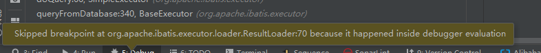一开始没有在意，还以为是自己断点的位置不对，最后针对这个提示，百度了一下，了解到：
- IDEA对于在toString中调用的方法，是不会走到断点的。具体了解的可以自己百度，很多的。
- 按照百度的设置，我们把相关设置配置好，最后才发现：
- 我说为什么断点只能进来一次，原来是因为测试用例默认开启了懒加载；
- 这就导致查询用户的时候的断点可以进来，在查询order的时候，因为是在toString中调用的，IDEA直接跳过了。
- 修改了相关配置后，第二个sql就可以断点进来啦。
- 最后我们测试关闭懒加载模式，看看第二个sql是什么时候调用的呢？
- 实在第一个sql执行完的之后，处理第一个sql的结果集的时候，在getRowValue方法中，调用applyPropertyMappings方法，然后调用getPropertyMappingValue方法，然后调用getNestedQueryMappingValue方法，然后调用
Textvalue = resultLoader.loadResult()
方法，在这个方法内部，执行了第二个sql的查询。
12 MyBatis与Spring整合
简介
- 我们知道MyBatis是使用sqlSession操作数据库的；
- 我们知道sqlSession是通过sqlSessionFactory.openSession获取的；
- 在mybatis-spring中，我们使用spring提供的
TextSqlSessionFactoryBean
来创建sqlSessionFactory对象
- 在mybatis中，使用sqlSessionFactory.openSession每次都会获取一个新的sqlSession对象，然后调用sqlSession的相关方法就可以与数据库交互了。
- 在mybatis-spring中，spring提供了sqlSessionTemplate用于完成数据库交互，它是单例的。
原理
- spring容器在启动的时候，会将bean的配置信息转换成BeanDefinition对象，BeanDefinition是一个接口，有很多实现类，用来描述不同方式配置的Bean信息；
- BeanDefinition有一个容器，叫做BeanDefinitionRegistry，所有的Bean信息都会注册到里面；另外，spring对BeanDefinitionRegistry提供了扩展机制，允许用户在spring框架启动时，动态的注册bean信息；
- 现在我们有了Bean信息，有个Bean信息的容器，spring框架在启动的时候，会根据bean信息创建生成bean实例，并保存在BeanFactory中，他们都是单例的。
- BeanFactoryPostProcessor
- ImportBeanDefinitionRegister
- BeanPostProcessor
- ClassPathBeanDefinitionScanner
- FactoryBean：可以理解为生成Bean的，当我们获取FactoryBean的时候，其实获取的是FactoryBean对象getObject方法返回的实例，比如配置SqlSessionFactoryBean，其实获取的是SqlSessionFactory